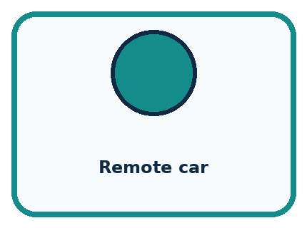
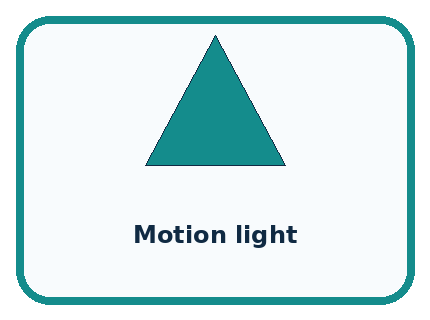
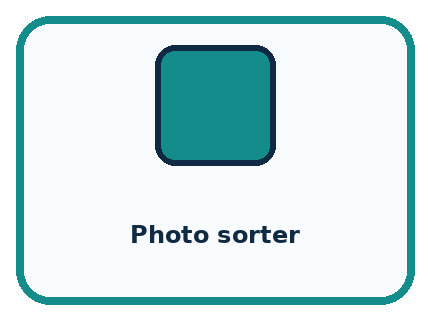
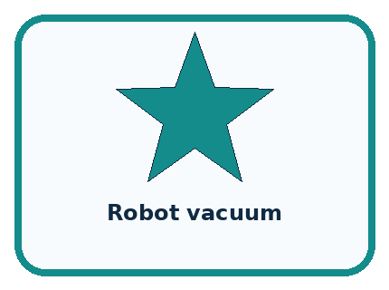

AI Academy · Level 1 · Grade 6 · Week 1 · Student lesson
AI or Not?
Learn to understand, design, build, test and explain AI systems responsibly.
Project: Helpful Classroom Sorter
THE CONNECTED WEEK
AI or Not? Follow the decision.
A red bus display, an umbrella forecast and a photo library all lead to one question: what produced this particular decision?
Keep one habit: Explain the decision → point to its evidence → state what remains unknown.
Main lesson · Section 1
What makes a machine seem clever?
Your goal: explain how a decision was made, using a fact about the process.
Start with one small puzzle
A clock says the correct time. Hearing it tells you what it did. It does not yet tell you how it did it. Keep that distinction in mind throughout this week.
A classroom clock speaks the time. Write one thing you observed and one thing you cannot determine just from hearing it.
By the end, you can…
I can distinguish an observed result from an explanation of how it was produced.
I can identify written rules, learned models and human decisions inside one product.
I can explain what additional evidence is needed when a mechanism is unknown.
How to use this week
Close your notes first. A rough first answer helps us choose the right starting point; it is not a score for your ability.
After trying, check the relevant lesson or ask your teacher. Change the part of your explanation that the evidence shows was wrong.
Earlier target wording and repeated recall
Your learning target
Remember before reading
Look for evidence of how the system reasons or learns, not just its label or screen.

LEARNING TARGET A bus displays a delay prediction learned from past journeys. A written rule turns the display red above 10 minutes. A driver can override the message. Identify all three mechanisms.
Would seeing a red display prove that learning occurred?
Learner name:
Readiness for the connected explanation
A classroom clock speaks the time. Write one thing you observed and one thing you cannot determine just from hearing it.
This week’s end goal
By the end, I can separate a learned prediction, a written rule and a human decision.
Main lesson · Section 2
A red bus display: what do we really know?
First describe what you can see. Then look for evidence about what happened inside.
Meet Leila and Arun
The school bus display says DELAY 12 MINUTES in red. Leila calls it AI because it predicted the delay. Arun calls it a simple rule because the number turned red.
Both have noticed a real part of the product, but neither has explained the whole system. To investigate, ask which decision you are talking about and what evidence reveals how that decision was made.
Look before you explain


An output is what a system produces. A mechanism is how it produces that output. Seeing a red number establishes its colour; it does not reveal where the number came from.
Similar outputs can come from different mechanisms, and one product can contain several mechanisms.
Your first observations
Name three visible details without explaining them yet.
Circle the detail most connected to the system's decision.
Name one detail that may be decoration or distraction.
Make a first prediction and state the clue that supports it.
Read the builder’s notes
These notes are given facts for our fictional case. They are stronger mechanism evidence than the colour of the display.
For this lesson we have an engineering note: the delay estimator was fitted using records of earlier bus journeys; a person wrote the colour instruction; and the driver can replace the message.
These are supplied facts for our classroom case. In a real investigation, we would need trustworthy documentation, a demonstration of the process or another source of mechanism evidence.
Extra observation prompts and original picture-story notes
PICTURE STORY
Look Closely Before You Explain
Pictures give clues; evidence tells us what the clues mean.

MYSTERY A remote-control car, calculator, motion light, smart speaker, photo sorter, and robot vacuum may all look clever, but they do not make decisions in the same way.
What do you notice?
My observations, prediction, and evidence:
GOOD THINKING A prediction can change when stronger evidence appears.
A closer explanation
Main lesson · Section 3
One product, three different decisions
Follow the number, the colour and the driver’s message separately.
Read the whole system


Explain each decision
1. Predict a number
Earlier journeys were used to fit the delay model. It uses today’s route and traffic information to estimate a 12-minute delay. A prediction can be wrong.
2. Apply a written rule
A person wrote this instruction: turn the display red when the estimated delay is greater than 10 minutes. Twelve is greater than ten, so the display turns red.
3. Make a human choice
The driver can choose a replacement message, such as ROUTE CLOSED. That replacement is a human decision.
Trace an information path
INPUT a command, signal, photo, sound, or number
PROCESS a human choice, fixed instruction, or learned pattern
OUTPUT movement, calculation, action, or prediction
Keep this important distinction
AI can also reason using knowledge and rules. So “written rule” does not always mean “outside AI.” In this bus case, changing the colour is a simple automatic step. Classify each decision separately.
Explain one arrow
Point to the input, the deciding step and the result in this week’s visual. Explain the same step in ordinary words. A picture helps when you can say what each part represents.
Full bus table and further mechanism explanation
VISUAL MECHANISM
Input → Process → Output
Follow the information instead of imagining magic inside the machine.


CORE IDEA Look for evidence of how the system reasons or learns, not just its label or screen.
UNDER THE HOOD A system should be classified by its decision mechanism. Human control, fixed automation, and model-based prediction can produce similar visible behavior, so appearance and marketing words are weak evidence.
Draw a fresh example with all three stages:
A closer explanation
The bus display contains three mechanisms
In the first row, fitting means adjusting a model using examples. Applying the fitted model to a new journey is a different step. The model can produce an incorrect estimate even if it was trained carefully.
In the second row, a written threshold compares the estimate with 10. It can follow its instructions perfectly while using a bad estimate. In the third row, a person makes the message decision.
Connect the picture and the explanation
AI is a broader field than learning from examples. It also includes approaches that represent knowledge and reason with rules. Therefore, do not use the shortcut that every rule is non-AI.
In this case, a simple colour switch is ordinary automation; identifying that switch does not classify every other part of the bus system.
Main lesson · Section 4
Compare the evidence, not the appearance
Ask who or what chooses the action in each case.
Four mechanisms to compare


The case to investigate
CASE 1 — Remote car Clue: person sends each steering command. Meaning: human-controlled.


The case to investigate
CASE 2 — Motion light Clue: written if-motion-then-light rule. Meaning: fixed automation.


The case to investigate
CASE 3 — Photo sorter Clue: trained model predicts a new label. Meaning: AI-based.


The case to investigate
CASE 4 — Robot vacuum Clue: description hides the mechanism. Meaning: not enough information.
Discuss with a partner
Which two pictures are easiest to confuse? What evidence separates them?
A limit to remember
BOUNDARY Do not call a system AI because it looks, moves, or talks like a person.
Original comparison cards and umbrella extension
PICTURE GALLERY
Four Cases, Four Clues
Use the visual cue, then read the evidence carefully.
CASE 1 — Remote car Clue: person sends each steering command. Meaning: human-controlled.
CASE 2 — Motion light Clue: written if-motion-then-light rule. Meaning: fixed automation.
CASE 3 — Photo sorter Clue: trained model predicts a new label. Meaning: AI-based.
CASE 4 — Robot vacuum Clue: description hides the mechanism. Meaning: not enough information.
Change one thing in the pictured case
Change: Keep the forecast but raise the display boundary to 80%.
Prediction: The display no longer says TAKE ONE.
Reason: 70 is below 80; changing a display rule does not refit the model.
Main lesson · Section 6
Work through the umbrella display
The forecast and the display rule do different jobs. Change one while keeping the other fixed.
The case and its given facts
A fictional school umbrella display shows TAKE ONE before lunch. What produced that advice?
A weather model was fitted on earlier weather records; its forecast is 70% rain.
A written rule shows TAKE ONE at rain forecasts of 60% or more. The teacher decides whether to distribute umbrellas.
First learn; later predict


Trace the four stages


Read the picture one step at a time
Why the answer follows
The fitting record supports calling the forecasting stage learned. Comparing 70 with 60 is an explicit rule. The final action belongs to a person.
Merely seeing TAKE ONE would not reveal any of these mechanisms; the process notes supply that evidence.
Predict: keep 70%, change the boundary
Change one thing: Keep the forecast but raise the display boundary to 80%. Predict the result before checking the explanation. What remains the same?
Check the changed-rule explanation


What this cannot prove
The display can follow its written rule correctly even if the forecast is wrong. Knowing why TAKE ONE appeared does not prove that rain will happen.
Explain the deciding step
Read the labelled picture: Point to the learned stage. Does the changed display prove the weather forecast changed?
Bus reasoning recap and earlier worked-example prompts
WORKED EXAMPLE
Watch the Reasoning, Not Just the Answer
Every step connects a claim to observable evidence.

CASE A remote-control car, calculator, motion light, smart speaker, photo sorter, and robot vacuum may all look clever, but they do not make decisions in the same way.
STEP 1 — OBSERVE a command, signal, photo, sound, or number
STEP 2 — TRACE a human choice, fixed instruction, or learned pattern
STEP 3 — CONCLUDE movement, calculation, action, or prediction
MODEL REASONING Follow the information and identify who or what makes the important choice. A robot body, screen, voice, or the word smart cannot prove AI.
If two mechanisms fit the evidence, say that more information is needed.
DO NOT OVERCLAIM Do not call a system AI because it looks, moves, or talks like a person.
What new evidence could change this answer?
A closer explanation
Question: Does the red display prove that a learned model was used? First separate the claim from the observation. The observation is that the displayed number is red. The claim concerns the process that produced the number.
Next find relevant evidence. The engineering note says earlier journeys were used to fit the delay estimator. That note supports a learned-model classification for the estimator. The red colour alone does not.
| Claim | Relevant evidence | Conclusion |
|---|---|---|
| The estimator uses a learned model | The note describes fitting on past journeys | Supported for the estimator |
| The red colour proves learning | Only the displayed colour is observed | Not supported by colour alone |
| The driver override is a model prediction | A driver selects the replacement message | Contradicted in this case |
A strong answer states its limit: I can identify these three mechanisms from the supplied note, but I cannot infer the model's accuracy from one estimate.
Even if the bus arrives exactly 12 minutes late, one success does not establish that the estimator will always work.
Learn from the worked case
Cover the result before checking it. Say what is given, choose the procedure, and follow one step at a time. Then uncover the result and explain your first mismatch. Ask why a step is allowed, not only what number it produces.
A pictorial worked case: AI or Not?
The facts we will use
Why this result follows
What this example does not establish
A correct rule comparison does not establish that rain will occur or that 70% forecasts are followed by rain on about 70 out of 100 comparable days.
Main lesson · Section 7
Repair a tempting explanation
A robot body, a screen or a correct answer does not reveal the decision mechanism.
Try two repairs
CLAIM A Every robot uses AI.
CLAIM B Anything with a screen is AI.
STRONG ANSWER FRAME I claim ______ because the evidence shows ______. The process is ______. One limit is ______.
What if the mechanism is unknown?
A robot vacuum is advertised as smart. The advertisement tells you almost nothing about its decisions. A useful question is not Does it look intelligent?
Ask instead how it selects a route, whether adjustable values were fitted using examples, or when a person supplies a command. It may combine several answers.
Sometimes the honest conclusion is that the mechanism is unknown. That is a precise answer when you identify the missing evidence. It is weaker to guess a mechanism and then treat your guess as a fact.
Keep observations, supplied evidence and assumptions separate in your investigation.
Explain without guessing
Comparison table and earlier repair prompts
COMPARE
Same Result, Different Reason
A comparison helps reveal the true concept boundary.
| Case | Evidence | What it shows |
|---|---|---|
| Remote car | person sends each steering command | human-controlled |
| Motion light | written if-motion-then-light rule | fixed automation |
| Photo sorter | trained model predicts a new label | AI-based |
| Robot vacuum | description hides the mechanism | not enough information |
Repair two tempting claims
Repair:
Repair:
A closer explanation
Main lesson · Section 8
Your turn: explain a photo library
Practise with help, then explain the evidence in your own words.
Read the case
A photo library predicts whether a picture contains a bicycle using a model fitted to labelled pictures. A written rule places all bicycle predictions in one album. The owner can move any photo to a different album.
Complete the explanation in your workbook: the prediction stage is ___ because ___; the automatic album step is ___ because ___; the manual move is ___.
Complete the explanation
Use three rows: prediction → album placement → owner move. For each row, write who or what made that decision and the fact that tells you. If a photo is misplaced, check the intermediate prediction before deciding where the error occurred.
Investigate a wrong album
If a photograph lands in the wrong album, do not immediately blame the written album rule. The prediction might have been wrong, the album rule might have been implemented incorrectly, or a person might have moved the photo.
Inspect the intermediate prediction and the action record to distinguish these causes.
Challenge one generalisation
Use the worked case for Evidence and decision mechanisms. Proposed explanation: “All rules are outside AI”. Decide whether this explanation is supported.
Point to the step or supplied fact that decides; explain your repair if needed.
Answer on your own before discussion. If you are unsure, say which step you need help with.
Check your explanation with a partner
PARTNER CHECK Point to the evidence. Do not accept an answer that only repeats the vocabulary word.
Explain your trace to a partner. Your partner points to one step to check. Swap roles on the next case. Each person writes their own explanation.
Umbrella practice and additional guided prompts
GUIDED PRACTICE
Try It, Check It, Explain It
Use support now so you can succeed independently later.

Explain how the picture story demonstrates this idea: Look for evidence of how the system reasons or learns, not just its label or screen.
Use a fresh example to explain AI system.
Trace a new input → process → output example.
Find and repair the error in: Anything with a screen is AI.
Invent one edge case and name the safe response.
A closer explanation
Practise with less help: Complete the photo library explanation
Use workbook W2 for the connected example “Evidence and decision mechanisms”. First fill the input and rule boxes. Try the middle steps before asking for a hint. After a hint, try the next step yourself.
| Plan | Do | Check |
|---|---|---|
| What is given? Which rule or procedure applies? | Record each intermediate step. | Does the result follow? What remains unknown? |
Check your reasoning
Explain the picture
Point to the learned stage. Does the changed display prove the weather forecast changed?
This is supported practice. Keep the separately named independent case for an attempt before feedback.
Main lesson · Section 9
Investigate: become a device detective
Use the supplied cards. Record what you predict, what the given facts support, and what is still unknown.
Your case cards
Use these six fictional cards: a lamp triggered by a written motion rule; a photo sorter fitted on labelled pictures; a car steered by a person; a calculator following arithmetic instructions; a smart speaker with no process notes; and a robot vacuum with no process notes. For the last two, the mechanism has deliberately not been supplied.
Run the investigation
State your prediction before the result is known.
Complete the task: Sort six devices by mechanism and defend two borderline cases.
Keep a normal case and an edge case clearly separated.
Record what happened—even when it does not match your prediction.
Explain the result, one limitation, and the next useful test.
Keep your evidence separate
| Case | Prediction | Observed result | What it means |
|---|---|---|---|
| Normal | |||
| Edge |
Before trying: what do I expect, and why? While trying: which step could first go wrong? Afterwards: what did I actually observe, and what should change? Keep “not run” if you only traced the procedure.
After you have tried
Use the six-device worked explanation in the reference bank to discuss your result. A discussion case is practice, not a fresh assessment.
INDEPENDENCE After support is removed, repeat the proof with a fresh case.
Original lab illustration and headings
EXPLORER LAB
Device Detective Sort
Predict first, test honestly, and explain what the evidence means.

Plan → try → check
Main lesson · Section 14
Explain a fresh case on your own
Use the greenhouse facts. Give one first attempt before hints or feedback.
The greenhouse challenge
A school greenhouse estimates tomorrow's temperature using a model fitted on historical weather. A written rule displays CHECK PLANTS above 30 degrees C. A caretaker chooses whether to open a vent.
Identify each mechanism and explain why a correct CHECK PLANTS message would not prove an accurate temperature prediction.
Record your support
Attempt this case before feedback. Record any help. Earlier examples below are further practice; a case already practised with feedback cannot establish fresh transfer.
Attempt the independent case before hints. Record whether you worked alone, used a hint or followed a model. After feedback, fix the first unsupported step and explain why it changed.
A later check uses a changed case, not a copied answer.
Other transfer questions for later practice
Independent case: Investigate a new hybrid system
Week 1 Independent application
Close the worked explanation. Apply the idea to this different question without copying.
A toy follows your steering buttons. A photo app learned from labelled pictures. A talking clock follows a written timetable. Which uses a learned model? What evidence supports each classification?
My answer, with a trace, calculation or supporting evidence
Create and test
Change one relevant detail. Predict the result before testing. Include a boundary or missing-information case when it helps reveal a limit.
My changed input and expected result
Connect to your project
Choose whether the Helpful Classroom Sorter needs a person, fixed rule, or learned model; justify the smallest safe solution.
The evidence I will keep
Your teacher has the independent answer and scoring criteria. Complete the matching workbook week to keep your practice evidence together.
Transfer practice from the original programme
A bus displays a delay prediction learned from past journeys. A written rule turns the display red above 10 minutes. A driver can override the message. Identify all three mechanisms.
Would seeing a red display prove that learning occurred?
Use feedback to improve
Main lesson · Section 11
Start your Helpful Classroom Sorter
Choose one real need, then justify the simplest process that could meet it.
Make one design decision
THIS WEEK'S CHECKPOINT Choose whether the Helpful Classroom Sorter needs a person, fixed rule, or learned model; justify the smallest safe solution.
For the Helpful Classroom Sorter, annotate which decisions follow written instructions and which, if any, were fitted from examples.
Plan your evidence
What real classroom need does this serve?
What information is necessary—and what should stay private?
What happens inside the process?
What normal and edge cases will you test?
When should it say not sure or ask a person?
Keep the boundary clear
RESPONSIBLE DESIGN Do not call a system AI because it looks, moves, or talks like a person.
Project illustration, original heading and record label
PROJECT
Helpful Classroom Sorter
Build one coherent system across the year, one evidence-based decision at a time.


My project decision:
Evidence for your project
Main lesson · Section 16
Finish with one explanation you can defend
Close your notes, explain the idea, then decide what evidence to keep.
Say it without the page
Close your notes. Explain this goal in your own words: Distinguish an observed result from an explanation of how it was produced
Choose your next move
If you are unsure, return to the worked picture and explain one arrow. If you are ready, change an input or assumption and justify your prediction.
Save your workbook evidence. At the next review, try a different case before opening your old answer.
Reference bank and extra practice
Choose the reference that helps your next step.
Your quick word guide
Reference · Section 5
Your quick word guide
Return here when a word blocks your explanation; you do not need to memorise both tables.
Useful words in this week’s cases
| Word | Meaning |
|---|---|
| Mechanism | The process that produces a result |
| Written rule | An instruction specified by a person before the system applies it |
| Learned model | A system whose adjustable values were fitted using examples |
| Hybrid system | A product that combines more than one kind of process |
| Word | Meaning | My example |
|---|---|---|
| AI system | a system using learned patterns or symbolic reasoning | |
| fixed rule | an instruction written in advance | |
| human-controlled | a person makes the important choice | |
| evidence | a clue that supports or changes a claim |
Use a word to repair a claim
CLAIM TO REPAIR Every robot uses AI.
Use one vocabulary word and one piece of evidence to repair it:
Vocabulary badges and original teaching notes
VOCABULARY
Words You Can See and Use
The badge is a memory cue; the definition does the real thinking work.


Misconception detective
WORD POWER A strong definition helps you decide something in a new case.
Words used in the closer explanation
Choose a harder thinking challenge
Reference · Section 10
Choose a harder thinking challenge
Use one challenge when you are ready; these are options rather than six more compulsory tasks.
Choose your next challenge
RECALL Define AI system.
EXPLAIN Look for evidence of how the system reasons or learns, not just its label or screen.
TRACE Show the input, process, and output.
DIAGNOSE Repair: Every robot uses AI.
TRANSFER Apply the idea to a new home or classroom case.
CREATE Design one revealing test.
DEFEND Give a claim, evidence, mechanism, limit, and safe action.
Practice-ladder illustration and coaching note
PRACTICE LADDER
Climb from Recall to Defense
Each step asks for a stronger kind of understanding.

RETRY RULE A coached answer becomes mastery only after you solve a different case independently.
A checklist for explaining any new case
Reference · Section 12
A checklist for explaining any new case
Use this as a reference after practice. The greenhouse is this week’s selected independent case.
Check an explanation
□ Name or draw the fresh case.
□ Trace input, process, and output.
□ State the conclusion and strongest evidence.
□ Name one limit, failure, missing clue, or fairness/privacy concern.
□ Explain one safe next action or improvement.
Think about your support
My level: □ Not yet □ With one hint □ Independently □ I can teach it
Original six-device assessment wording and extra notes
MASTERY
A Checklist for Explaining a Case
Use this checklist after practice. Complete the greenhouse case separately before feedback.

PRACTICE RECORD Classify the six supplied devices by mechanism, then defend two difficult cases with evidence. These devices have already been used in teaching; do not count the same cases as a fresh assessment.
Independent evidence:
SELF-CHECK Follow the information and identify who or what makes the important choice. A robot body, screen, voice, or the word smart cannot prove AI. If two mechanisms fit the evidence, say that more information is needed.
NEXT BRIDGE Carry today's evidence habit into: Input, Process, Output.
Check the six-device investigation
Reference · Section 13
Check the six-device investigation
Open this after attempting the device detective task. It is a worked explanation.
Question and explanation
Six devices are a motion-triggered lamp, a trained photo sorter, a remote-controlled car, a calculator, an unspecified smart speaker and an unspecified robot vacuum.
Classify all six using mechanism evidence. Which two need more information?
The lamp uses a fixed rule; the photo sorter uses a learned model; the car follows human commands; the calculator performs arithmetic. The speaker and vacuum need mechanism details. Products can combine mechanisms.
A robot body or smart label proves none of them.
What the explanation does and does not establish
Scope note: this course mainly studies learning from examples. AI also includes symbolic and rule-based approaches. Ask how a system reasons or learns; a robot body or a simple automatic switch is insufficient evidence.
Explain your reasoning
Which detail supports the answer, and why does it matter?
Repeated six-device table and wording
Week 1 Worked case
Use the supplied details to practise the weekly concept before attempting the independent question. This case extends the illustrated lesson.
The situation
The question
Worked explanation
Explain it in your own words
Trace the supplied case visually
Find the decision maker
| Evidence or stage | Value or result |
|---|---|
| Motion lamp | Written rule |
| Photo sorter | Learned from examples |
| Remote car | Human command |
| Smart speaker | Need more information |
Six devices are a motion-triggered lamp, a trained photo sorter, a remote-controlled car, a calculator, an unspecified smart speaker and an unspecified robot vacuum.
Classify all six using mechanism evidence. Which two need more information?
The lamp uses a fixed rule; the photo sorter uses a learned model; the car follows human commands; the calculator performs arithmetic. The speaker and vacuum need mechanism details. Products can combine mechanisms.
A robot body or smart label proves none of them.
Reference: the original lesson route
Reference · Section 15
Reference: the original lesson route
The main route at the start of this edition replaces the need to follow several overlapping plans.
Goals and evidence
| By the end, I can | How I will show it |
|---|---|
| Distinguish an observed result from an explanation of how it was produced | Explain the deciding step, show a trace or test, and state one limit. |
| Identify written rules, learned models and human decisions inside one product | Explain the deciding step, show a trace or test, and state one limit. |
| Explain what additional evidence is needed when a mechanism is unknown | Explain the deciding step, show a trace or test, and state one limit. |
Remember → watch and explain → try with help → investigate → try independently → keep project evidence. Your teacher may spread this lesson across several classes.
Keep your first prediction. Compare it with what the evidence shows and explain any change.
Original umbrella opening question
Start with this question: A fictional school umbrella display shows TAKE ONE before lunch. What produced that advice?
Optional supported practice
Reference · Section 17
Optional supported practice
Choose the interactive questions or this paper version. They refer to the same practice, not two separate assignments.
Question 1: identify the deciding stage
A fictional school umbrella display shows TAKE ONE before lunch. What produced that advice?
Which labelled step matches this detail? The teacher checks current conditions before distributing umbrellas.
1. Weather records
2. Final decision
3. Display rule
4. Forecast
Hint if needed: Read the steps in the pictorial case. Match the supplied detail to the stage that performs or records it.
Practice 1: explain the deciding evidence
Check after your attempt
After your attempt, compare with the supported explanation: Final decision The teacher checks current conditions before distributing umbrellas. The fitting record supports calling the forecasting stage learned.
Comparing 70 with 60 is an explicit rule. The final action belongs to a person. Merely seeing TAKE ONE would not reveal any of these mechanisms; the process notes supply that evidence.
Question 2: change the boundary
Changed-case practice: Keep the forecast but raise the display boundary to 80%. Which conclusion is supported by the supplied facts?
1. This one example guarantees correct results for every future input.
2. The display no longer says TAKE ONE.
3. We can decide the result without examining the changed input or the procedure.
Hint if needed: Use the changed condition and the deciding step in the pictorial trace. The answer must say what follows from those facts.
Practice 2: explain the deciding evidence
Check after your attempt
After your attempt, compare with the supported explanation: The display no longer says TAKE ONE. 70 is below 80; changing a display rule does not refit the model.
Keep the work you completed
This is the starting lesson. Ask your teacher to model one observation, one written rule and one deciding step, then try your own example.
Use Download completed work in the hosted lesson to export your answers, reflections, practice feedback and code-run evidence. Open the HTML copy to read or print it.
Drafts stay in this browser when storage is available; clear drafts on a shared device.
Original practice and portfolio headings
Use this supported practice once, in the browser or on paper. Keep the reserved independent assessment for a separate first attempt before teacher feedback.
Repair a missing building block
Keep your completed work
The six-picture reference gallery
Reference · Section 18
The six-picture reference gallery
Revisit a picture when you need it. Key pictures also appear beside the main explanation.
01. Seeing a result is not explaining it
A bus has a red display showing a 12-minute delay. That is an observation. A supplied engineering note says past journeys fitted the delay model; that is evidence about its mechanism.
Name one observation and one claim that needs more evidence.
02. Who or what makes this decision?


A remote-controlled car follows human commands, a motion lamp follows a written rule, and a trained photo sorter applies a learned model. A product can combine mechanisms. AI also includes symbolic reasoning.
Point to who or what makes each decision.
03. One bus display. Three different decisions.
Three separate rows trace the bus estimate, display colour and driver override. The fitted model estimates 12 minutes; the written greater-than-10 rule makes the display red; the driver can choose ROUTE CLOSED.
Trace the number, colour and override separately.
04. Learn first. Predict later.
Earlier weather records are used to fit a model. Later, new measurements are passed to that fitted model to obtain a 70 percent rain forecast. It is an estimate, not a guarantee.
Which steps use earlier examples, and which use a fitted model?
05. Change the rule. Keep the forecast.
With a 70 percent rain forecast, a 60 percent-or-more rule displays TAKE ONE. An 80 percent-or-more rule does not trigger that message. Only the boundary changed; the fitted model and forecast did not.
Keep the forecast fixed at 70%. What changes when the boundary becomes 80%?
06. “Not enough information” is a useful answer


An unspecified smart robot vacuum moves and cleans, but its route mechanism is unknown. Ask for evidence of human commands, written rules or model fitting, and allow combinations. Apply this reasoning to a classroom sorter.
Which evidence would change your answer about the vacuum?